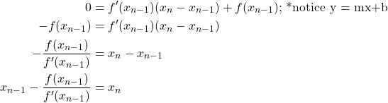
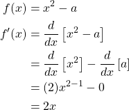
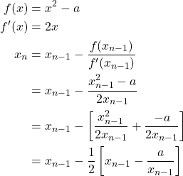
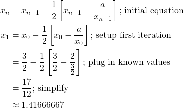
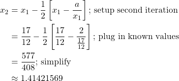

Newton's Method
Written by Andrew McQueen (2022amcqueen@vg302.org)What is Newton's Method?
Newton's Method (also known as Newton-Raphson Method) is an iterative algorithm for finding the roots of functions. To put it in laymans terms, the more times we compute the next step of the algorithm, the closer we approximate the x-intercepts of a function.

How does it work?
The method works by using an initial guess which may or may not be close to the real answer. Any guess works, but accurate guesses decrease the amount of iterations that need to be done to get to a reasonable approximation. Then the x-intercept of the tangent of the function at the initial guess is calculated and that becomes the new guess. This process is repeated and in most situations will converge to the root of a function at infinite iterations.
How can I use it?
Newton's Method is often applied to approximate the square roots of numbers. Without a calculator one might assume it is impossible to determine an answer to the question "is two thirds larger than the square root of 7?"
We can begin by letting our f(x) be equal to x squared minus some constant greater than 0:
The reasoning behind this is that if you were to factor the function then you would be left with the equation:
With our definition of f we can now get to using Newton's Method. We will want to find the derivative of f (denoted f' – f prime). Application of the power rule can help us here.

Now that we have f and f', we can proceed to using Newton's Formula. We plug in our equations and simplify.

Now, given any number, we can approximate the square root of it by substituting that number for a in our simplified formula for the nth x term.
Let's consider finding the square root of 2. Thus, let a be equal to 2. Our initial guess will be 1.5 since root 2 is probably around two thirds (1.5). We want to evaluate the first iteration:

It is unlikely our new approximation is reasonably close to the real answer of root 2 yet, so we will preform a second iteration:

After two iterations we have most likely generated a good guess for the approximation of root 2. Infact, in our case, we were accurate up to 5 decimal places. The actual approximation of root 2 is 1.41421356
Resources Used
Square Roots via Newton’s MethodNewton's method
Latex2Image
QuickLatex©Pavel Holoborodko